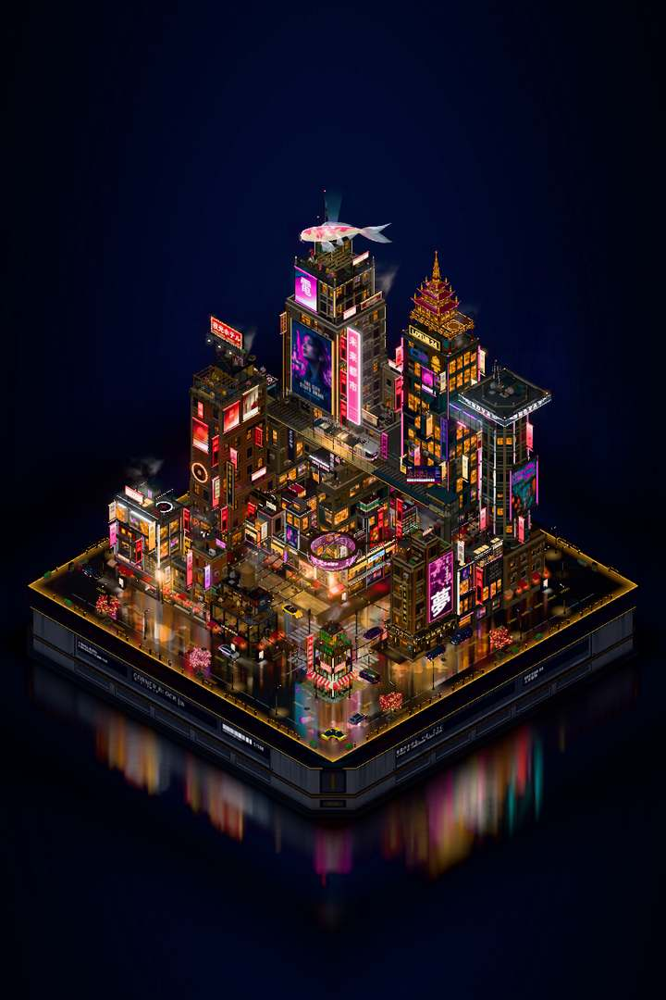

Cyberpunk City
One block in Sector 09 at 2:14 AM, in the rain. Neon, wet streets, flying cars, a train on the viaduct, and a dragon you can summon.
I built the city I think we're heading toward. Nobody walks the street at 2 AM. Life happens a level up, on terraces and behind lit windows.
I directed it: the vision, the taste, and every keep-or-cut call across hundreds of versions. AI agents did the building in Blender and Three.js.
Open the live city
It builds the whole block in your browser, so the first load takes a minute or two. Best on a desktop with a graphics card.
In the live city
- Drag to orbit, scroll to zoom.
- Buttons jump to Overview, District, Cinema and Junction.
- G summons the dragon.